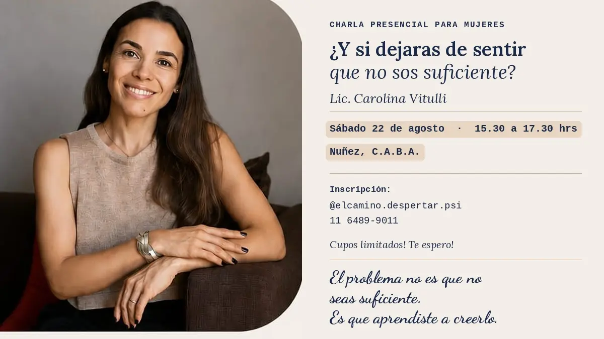

COMUNIDAD¿Cuántas veces revisaste ese mensaje antes de mandarlo? ¿Cuántas veces preparaste de más algo que ya estaba listo, "por las dudas"?
Si te reconocés en eso, esta charla es para vos.
¿Y si dejaras de sentir que no sos suficiente? Una charla pensada para mujeres que viven exigiéndose, que sienten que nunca es suficiente, que confunden el descanso con la pérdida de tiempo y que muchas veces se preguntan por qué, haciendo tanto, igual sienten que no alcanza.
Vamos a conversar sobre:
⚪ autoexigencia
⚪ perfeccionismo
⚪ culpa
⚪ autoestima
⚪ síndrome del impostor